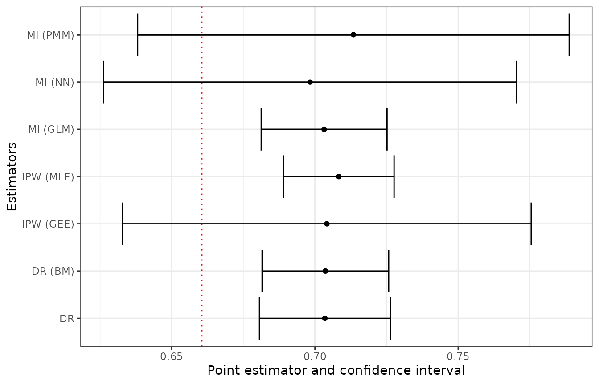

nonprobsvy: An R Package for Modern Methods for Non-Probability Surveys
Łukasz Chrostowski (Analytic Partners)
Piotr Chlebicki (Stockholm University)
Maciej Beręsewicz (Poznań University of Economics and Business; Statistical Office in Poznań)
2026-09-04
Source:vignettes/nonprobsvy.Rmd
nonprobsvy.RmdAbstract. This vignette is based on the paper Chrostowski, Ł., Chlebicki, P., & Beręsewicz, M. (2026). nonprobsvy: An R package for modern methods for non-probability surveys. Journal of Statistical Software, 117(2), 1-37. https://doi.org/10.18637/jss.v117.i02. The paper presents nonprobsvy – an R package for inference based on non-probability samples. The package implements various approaches that can be categorized into three groups: prediction-based approach, inverse probability weighting and doubly robust approach. In the package, we assume the existence of either population-level data or probability-based population information and leverage the survey package for inference. The package implements both analytical and bootstrap variance estimation for the proposed estimators. In the paper we present the theory behind the package, its functionalities and a case study that showcases the usage of the package. The package is aimed at scientists and researchers who would like to use non-probability samples (e.g., big data, opt-in web panels, social media) to accurately estimate population characteristics.
Keywords: data integration, doubly robust estimation, propensity score estimation, mass imputation, survey.
Introduction
In official statistics, information about the target population and its characteristics is mainly collected through probability surveys, censuses or is obtained from administrative registers and covers all (or nearly all) units of the population. However, owing to increasing non-response rates, particularly unit non-response and non-contact, which result from the growing respondent burden as well as rising costs of surveys conducted by National Statistical Institutes, non-probability data sources are becoming more popular (Beręsewicz 2017; Beaumont 2020; Biffignandi and Bethlehem 2021). Non-probability surveys, such as opt-in web panels, social media, scanner data, mobile phone data or voluntary register data, are currently being explored for use in the production of official statistics (Citro 2014; Daas et al. 2015), public opinion studies (Schonlau and Couper 2017) or market research (cf. Grow et al. 2022). Since the selection mechanism underlying these sources is unknown, standard design-based inference methods cannot be directly applied and, in the case of large datasets, can lead to the big data paradox, i.e., the larger the sample, the larger the bias, as described by Meng (2018).
Table 1 compares basic characteristics of probability and non-probability samples. In particular, it shows the advantages and disadvantages of each type with respect to the selection mechanism, the population coverage, bias, variance, costs and timeliness. In general, the quality of non-probability samples suffers from an unknown selection mechanism (i.e., unknown probabilities of inclusion) and under-coverage of certain groups from the population (e.g., older people). As a result, direct estimates based on non-probability samples are biased and, in most cases, are characterized by small variance owing to their size. Certainly, the costs and timeliness of these surveys are significantly smaller than those of probability samples.
| Factor | Probability sample | Non-probability sample |
|---|---|---|
| Selection | Known probabilities | Unknown probabilities (self-selection) |
| Coverage | Complete | May be incomplete |
| Estimation bias | Unbiased under design | Potential systematic bias |
| Variance of estimates | Typically high | Typically low |
| Cost | High | Low |
| Timeliness | Long delay | Very short delay |
To address this problem, several approaches have been proposed, which rely on the estimation of propensity scores (PS; i.e., inclusion probabilities) for deriving inverse probability weights (IPW; also known as propensity score weighting/adjustment, cf. Lee (2006; Lee and Valliant 2009)), on model-based prediction (in particular, mass imputation estimators; MI) and on the doubly robust (DR) approach involving IPW and MI estimators. Two main scenarios are usually considered:
- Only population-level means or totals are available (e.g., from census, registers or sample surveys).
- Unit-level data are available either in the form of registers covering the whole population or in the form of probability surveys (cf. Elliott and Valliant 2017).
Wu (2022) classified these approaches into three groups that require a joint randomization framework involving a probability sampling design (denoted as p) and an outcome regression model (denoted as \xi) or a PS model (denoted as q). According to this classification, IPW estimators represent the qp framework, MI estimators represent the \xi p framework, and DR estimators can represent either the qp or the \xi p framework.
Most approaches assume that population data is available in order to reduce the bias of non-probability sampling by reweighting to reproduce known population totals/means (i.e., IPW estimators); by modeling the target variable using various techniques (i.e., MI estimators); or by combining both approaches (e.g., DR estimators, cf. Chen et al. (2020); see also multilevel regression and post-stratification, MRP; Mister-P, cf. Gelman and Little (1997)). This topic has become very popular and a number of new methods have been proposed; for instance non-parametric approaches based on nearest neighbors (Yang et al. 2021), kernel density estimation (Chen et al. 2022), empirical likelihood (Kim and Morikawa 2023), model-calibration with LASSO (Chen et al. 2018) or quantile balanced IPW (Beręsewicz et al. 2025) to name a few. It should be highlighted that, in contrast to probability samples, there is no single method that can be used for all non-probability samples. Based on the methods available in the literature several statistical software solutions have been developed. These pieces of software will be presented and compared with nonprobsvy (Chrostowski et al. 2026) in the next section.
Software for non-probability samples
Table 2 presents a comparison of selected packages in terms of the
availability of different inference methods. The reason for this is the
availability of software designed for inference based on non-probability
samples, not a general way to estimate propensity scores or model \mathbb{E}(Y \mid X). For such reviews, one
can refer to Valliant and Dever (2018, chap. 6) who discussed
weighting and matching in this context in Stata (StataCorp 2025)
using logit, svy and
teffects nnmatch commands or Lohr
(2021, e.g., Chapter 8) who covers
SAS software [ Institute Inc. (2023); e.g., PROC LOGISTIC
procedure].
We focus on packages available as open source or via CRAN or PyPI (for non-CRAN or non-PyPI software see Cobo et al. (2024)). Our comparison includes five packages that focus specifically on non-probability sampling: in R – NonProbEst (Mart’ın et al. 2020) and our nonprobsvy, and in Python – balance (Sarig et al. 2023), inps (Mart’ın 2025), and in Stan (Carpenter et al. 2017) e.g., through the R package rstanarm, which allows you to easily apply the rstanarm’s MRP method (Goodrich et al. 2025).
| Stan | balance (Python) | inps (Python) | NonProbEst (R) | nonprobsvy (R) | |
|---|---|---|---|---|---|
| IPW | – | ✓ | ✓ | ✓ | ✓ |
| Calibrated IPW | – | – | – | – | ✓ |
| MI | – | – | – | ✓ | ✓ |
| DR | – | – | ✓ | – | ✓ |
| MRP | ✓ | – | – | – | – |
| Variable selection | ✓ | ✓ | ✓ | ✓ | ✓ |
| Analytical variance | – | – | – | – | ✓ |
| Bootstrap variance | – | – | – | ✓ | ✓ |
| Integration with survey/samplics | – | – | – | – | ✓ |
The NonProbEst package, while more limited than nonprobsvy, offers various techniques, such as PS or prediction approaches (e.g., model-calibrated). Users can choose several different settings for PS weights, variable selection and can estimate variance of the mean using the leave-one-out Jackknife procedure. Unfortunately, has had no new CRAN release since version 0.2.4. While the package contains functions designed for specific methods, it does not allow users to leverage the survey package (Lumley 2004) for estimation. The balance package is solely dedicated to the PS approach (as of version 0.20.0). It assumes that the reference probability sample is available and the authors have implemented the variance estimator of the weighted mean as a measure of uncertainty for the IPW estimator. The weights for the IPW estimator are constructed using the approach proposed by Schonlau and Couper (2017). The inps package supports the use of unit-level data from a probability sample or the population, implements IPW, MI and DR estimators, and offers users the possibility of selecting variables but is still at a very early stage of development. It also implements kernel weighting and a simple bootstrap approach via the scipy.stats package (Virtanen et al. 2020). Neither balance nor inps supports the use of the samplics package (Diallo 2021). Finally, we note that the MRP approach is implemented solely in Stan with variable selection specified by an appropriate prior, but it can be easily implemented in other probabilistic programming languages, e.g., using the Turing.jl package (Fjelde et al. 2025) in the Julia language (Bezanson et al. 2017).
The nonprobsvy package has several advantages over
those presented above. Firstly, it implements state-of-the-art methods
recently proposed in the literature, along with valid statistical
inference procedures. Secondly, it offers other approaches, such as
calibrated IPW (where PS weights match either the population or
estimated totals), NN and PMM matching, various IPW and DR estimators
using generalized linear models (GLM) with different link functions for
probability estimation. Thirdly, it supports the functions included in
the survey package to account for the design of the
probability sample. Finally, we provide a user-friendly API that mimics
glm(), survey::calibrate() and other functions
known in R, together with the main function to specify the approach and
estimators. Among the packages reviewed here, is the only one that
offers such functionalities.
The remaining part of the paper is structured as follows. The next section is dedicated to the theory of statistical inference based on non-probability samples. We provide the basic set-up and introduce specific methods in separate sections. We follow the notation used by Wu (2022) throughout the paper. We then describe the main function and the package functionalities, and present an empirical study showcasing the process of integrating data from the Polish Job Vacancy Survey with voluntary administrative data from the Central Job Offers Database in order to estimate the share of companies with at least one vacancy offered on a single shift. We then present classes and S3 methods implemented in the package. The paper ends with a summary and plans for future development. The Appendix presents algorithms for selected MI estimators.
The package nonprobsvy (Chrostowski et al. 2026) is available from the Comprehensive R Archive Network (CRAN) at https://CRAN.R-project.org/package=nonprobsvy.
Methods for non-probability samples
Basic setup
Let U = \{1, \ldots, N\} denote the target population consisting of N labeled units. Each unit i has an associated L-dimensional vector of auxiliary variables \boldsymbol{x}_{i} and the study (target) variable y_{i}. Let \{ (y_i, \boldsymbol{x}_i), i \in \mathcal{I}_{\text{NP}}\} be a non-probability sample S_{\text{NP}} of size n_{\text{NP}}, where \mathcal{I}_{\text{NP}} is an index set for S_{\text{NP}}. Let \left\{\left(\boldsymbol{x}_i, \pi_{\text{P},i}\right), i \in \mathcal{I}_{\text{P}}\right\} be a probability sample S_{\text{P}} of size n_{\text{P}}, where \mathcal{I}_{\text{P}} is an index set for S_{\text{P}}, and the only information known for all units in the population refers to auxiliary variables \boldsymbol{x} and inclusion probabilities \pi_{\text{P}}. Each unit in the S_{\text{P}} sample has been assigned a design-based weight given by d_{\text{P},i} = 1/\pi_{\text{P},i}.
Let I_{\text{NP},i}=I(i \in S_{\text{NP}}) and I_{\text{P},i}=I(i \in S_{\text{P}}) be indicators of inclusion in the non-probability sample S_{\text{NP}} and the probability sample S_{\text{P}}, respectively, which are defined for all units in the target population. Let \pi_{\text{NP},i}=\mathbb{P}(I_{\text{NP},i}=1 \mid \boldsymbol{x}_i) be propensity scores, which characterize the S_{\text{NP}} sample’s inclusion and participation mechanisms. Unlike \pi_{\text{P},i}, the \pi_{\text{NP},i} and d_{\text{NP},i}=1/\pi_{\text{NP},i} are unknown. The description of the data is presented in a more concise form in Table 3.
| Sample | ID | Inclusion (I_{\text{NP}}) | Design weight (d) | Covariates (\boldsymbol{x}) | Study variable (y) |
|---|---|---|---|---|---|
| Non-probability | 1 | 1 | ? | ✓ | ✓ |
| S_{\text{NP}} | ⋮ | ⋮ | ⋮ | ⋮ | ⋮ |
| n_{\text{NP}} | 1 | ? | ✓ | ✓ | |
| Probability | n_{\text{NP}}+1 | 0 | ✓ | ✓ | ? |
| S_{\text{P}} | ⋮ | ⋮ | ⋮ | ⋮ | ⋮ |
| n_{\text{NP}}+n_{\text{P}} | 0 | ✓ | ✓ | ? |
The goal is to estimate the finite population mean \mu_{y} = N^{-1}\sum_{i=1}^{N} y_{i} of the target variable y. As values of y_{i} are not observed in the probability sample, they cannot be used to estimate the target quantity. Instead, one could try combining the non-probability and probability samples (or known population totals) to estimate \mu_{y}. Given the absence of a universally accepted method for achieving this objective, assumptions vary considerably, as outlined by Wu (2022). However, the following are the main assumptions that apply to the majority of methods presented in this section:
- A1 I_{\text{NP}, i} and the study variable y_{i} are independent given the set of covariates \boldsymbol{x}_{i} (the missing at random mechanism).
- A2 All the units in the target population have non-zero PS, i.e., \pi_{\text{NP}, i}>0, i=1, 2, \ldots, N (i.e., no coverage error).
- A3 The indicator variables I_{\text{NP}, 1}, I_{\text{NP}, 2}, \ldots, I_{\text{NP}, N} are independent given the set of auxiliary variables \left(\boldsymbol{x}_1, \boldsymbol{x}_2, \ldots, \boldsymbol{x}_N\right) (i.e., no clustering).
Currently, we ignore overlap between S_{\text{NP}} and S_{\text{P}}, and assume no measurement error in y_i or \boldsymbol{x}_i and the fact that values of \boldsymbol{x}_i are known. The setting presented in Table 3 can also be extended to calibrated d_{\text{P}, i} weights (i.e., d_{\text{P}, i} adjusted for under-coverage, non-contact or non-response; cf. Särndal and Lundström (2005)) but this requires additional developments in the theory about the consistency of the MI, IPW and DR estimators. In the next sections we briefly present the methods implemented in the package.
Prediction-based approach
Prediction estimators
In the model-based prediction approach the following semi-parametric model for the finite population is assumed:
\mathbb{E}_{\xi}\left(y_i \mid \boldsymbol{x}_i\right)=m\left(\boldsymbol{x}_i, \boldsymbol{\beta}\right), \text { and } \quad V_{\xi}\left(y_i \mid \boldsymbol{x}_i\right)=v\left(\boldsymbol{x}_i\right) \sigma^2, \quad i=1, 2, \ldots, N, \tag{1}
where the mean function m(\cdot, \cdot) and the variance v(\cdot) have known forms, \boldsymbol{\beta} and \sigma^2 are model parameters and y_i are also assumed to be conditionally independent given the \boldsymbol{x}_i. The model in Equation 1 is assumed to hold for all units in the non-probability sample S_{\text{NP}}. The parameters of the model in Equation 1 can be estimated using the quasi maximum likelihood estimation method, which includes linear and non-linear models, such as GLM. Let \boldsymbol{\beta}_0 and \sigma^2_0 be the true values of the model parameters \boldsymbol{\beta} and \sigma^2 under the adopted model and \hat{\boldsymbol{\beta}} be the quasi maximum likelihood estimator of \boldsymbol{\beta}_0. Let m_i=m(\boldsymbol{x}_i, \boldsymbol{\beta}_0) and \hat{m}_i=m(\boldsymbol{x}_i, \hat{\boldsymbol{\beta}}) be calculated for all units i=1, \ldots, N. Under this setting, as Wu (2022) notes, there are two commonly used prediction estimators:
\hat{\mu}_{y, \text{PR1}}=\frac{1}{N} \sum_{i=1}^N \hat{m}_i \quad \text { and } \quad \hat{\mu}_{y, \text{PR2}}=\frac{1}{N}\left\{\sum_{i \in S_{\text{NP}}} y_i-\sum_{i \in S_{\text{NP}}} \hat{m}_i+\sum_{i=1}^N \hat{m}_i\right\}. \tag{2}
Under linear models, where m(\boldsymbol{x}_i, \boldsymbol{\beta})=\boldsymbol{x}_i^{\top}\boldsymbol{\beta}, the two estimators in Equation 2 reduce to:
\hat{\mu}_{y, \text{PR1}}=\mu_{\boldsymbol{x}}^{\top} \hat{\boldsymbol{\beta}} \quad \text { and } \quad \hat{\mu}_{y, \text{PR2}}=\frac{n_{\text{NP}}}{N}\left(\overline{y}_{\text{NP}}-\overline{\boldsymbol{x}}_{\text{NP}}^{\top} \hat{\boldsymbol{\beta}}\right)+\mu_{\boldsymbol{x}}^{\top} \hat{\boldsymbol{\beta}}, \tag{3}
where \mu_{\boldsymbol{x}} = N^{-1}\sum_{i=1}^N\boldsymbol{x}_i is the vector of the population means of the \boldsymbol{x} variables and \overline{\boldsymbol{x}}_{\text{NP}}=n_{\text{NP}}^{-1}\sum_{i \in S_{\text{NP}}}\boldsymbol{x}_i is the vector of the simple means of \boldsymbol{x} from the non-probability S_{\text{NP}} sample. If the linear model contains an intercept and \hat{\boldsymbol{\beta}} is the ordinary least squares estimator, then \hat{\mu}_{y, \text{PR1}}=\hat{\mu}_{y, \text{PR2}}.
The estimator in Equation 3 is appealing as it only requires the non-probability sample S_{\text{NP}} and reference population means (or totals and population size N). If the population means are unknown, they can be replaced by estimates provided by the reference probability sample S_{\text{P}}, i.e., \sum_{i=1}^N \hat{m}_i is replaced with \sum_{i \in S_{\text{P}}} d_{\text{P}, i}\hat{m}_i for Equation 2 and \mu_{\boldsymbol{x}} is replaced by \hat{\mu}_{\boldsymbol{x}}=\hat{N}_{\text{P}}^{-1}\sum_{i \in S_{\text{P}}}d_{\text{P}, i}\boldsymbol{x}_i for Equation 3 where \hat{N}_{\text{P}}=\sum_{i \in S_{\text{P}}}d_{\text{P}, i}.
Mass imputation estimators
Model-based prediction estimators of \mu can be treated as mass imputation estimators, since the information on y_i is missing entirely in the reference probability sample S_{\text{P}} (but \boldsymbol{x}_i is available) and y_i can be imputed based on the non-probability sample as values of \{ (y_i, \boldsymbol{x}_i), i \in \mathcal{I}_{\text{NP}}\} are known. The general form of the MI estimator is given by:
\hat{\mu}_{y, \text{MI}}=\frac{1}{\hat{N}_{\text{P}}} \sum_{i \in S_{\text{P}}} d_{\text{P}, i} y_i^*,
where y_i^* is the imputed value of y_i and \hat{N}_{\text{P}} is defined as previously. Under deterministic regression imputation, the \hat{\mu}_{y, \text{MI}} estimator reduces to the estimators in Equation 2.
There are several ways of imputing y_i^* and in the nonprobsvy package we have implemented the following MI estimators: the semi-parametric approach based on GLM (MI-GLM), kernel smoothing (MI-NPAR), nearest neighbor matching (MI-NN) and predictive mean matching (MI-PMM).
The properties of the MI-GLM estimator, where y_i^* are imputed with \hat{m}_i from the semi-parametric model,
were studied by Kim et al. (2021). In the
nonprobsvy package, we account for the following GLM
families: gaussian(), binomial() and
poisson(). The MI-NPAR estimator was proposed by Chen et al. (2022) who studied its
finite population properties. Currently, we implement this approach
using local polynomial regression using stats::loess()
function. In the next releases we will allow users to use the
np (Hayfield and Racine 2008) or
KernSmooth (Wand 2025) packages.
The MI-NN estimator was initially proposed by Rivers (2007) under the name sample matching and theoretical properties of the MI-NN estimator for large non-probability samples (big data, i.e., covering a significant part of the target population) were studied by Yang et al. (2021). The basic idea of NN matching is as follows:
- for each unit i in the probability sample S_{\text{P}} find a donor j (or multiple donors) in the S_{\text{NP}} sample based on some distance between \boldsymbol{x}_i and \boldsymbol{x}_j,
- use the matched values y_j from S_{\text{NP}} to impute missing y_i values in the probability sample S_{\text{P}}.
Imputed values of y_i^* depend on the number of selected k neighbors: for k=1, the closest unit is selected, and for k>1, one can calculate a simple average over a vector of selected y values. A detailed description of the procedure is presented in Algorithm 1 in the Appendix. The MI-NN estimator suffers from the curse of dimensionality, i.e., asymptotic bias of the MI estimator increases as the number of covariates \boldsymbol{x} increases with a fixed k (Abadie and Imbens 2006; Yang and Kim 2020). The single PMM imputation approach has been proposed to overcome this issue (Chlebicki et al. 2024).
In the PMM approach, matching is done using predicted values of \hat{m}_i=m\left(\boldsymbol{x}_i, \hat{\boldsymbol{\beta}}\right) instead of \boldsymbol{x}_i, thus the NN algorithm is modified as follows:
- fit the model m\left(\boldsymbol{x}_i, \boldsymbol{\beta}\right) to non-probability S_{\text{NP}} sample,
- assign predicted values \hat{m}_i to all units in S_{\text{NP}} and S_{\text{P}},
- match all units from the S_{\text{P}} sample to donor units from the S_{\text{NP}} sample based on \hat{m} values.
The MI-PMM estimator is the same as in the NN approach but differs from the multiple imputation PMM implemented in the mice package (van Buuren and Groothuis-Oudshoorn 2011). In nonprobsvy we have implemented a single, deterministic imputation method (i.e., one dataset is created). Chlebicki et al. (2024) studied properties of two variants of the MI-PMM estimator for non-probability samples: matching predicted to predicted (\hat{m}-\hat{m} matching; denoted as MI-PMM-A) and matching predicted to observed (\hat{m}-y matching; denoted as MI-PMM-B). Details of the procedure can be found in Algorithm 2 and Algorithm 3 in the Appendix. Chlebicki et al. (2024) also prove the consistency of the MI-PMM-A estimator under model misspecification, i.e., the assumed model may differ from the true one.
Variance estimators for the prediction approach
Variance of the MI estimators can be estimated analytically or using the bootstrap approach. The analytical estimator of the variance of the MI-GLM estimator proposed by Kim et al. (2021, 950) contains two components: \hat{V}_1 (based on the information from both samples S_{\text{NP}} and S_{\text{P}}) and \hat{V}_2 (based exclusively on the probability sample S_{\text{P}}). For the MI-NN estimator Yang et al. (2021) proposed a variance estimator for large S_{\text{NP}} samples, which reduces to the part for the probability sample S_{\text{P}} (i.e., the design-based variance estimator of the mean, which can easily be obtained from the survey package) and a version for smaller samples can be found in Chlebicki et al. (2024). With respect to the variance of MI-PMM estimators, Chlebicki et al. (2024) propose formulas which are the same as those for the MI-NN estimators. The analytical variance estimator for the MI-NPAR was proposed by Chen et al. (2022).
In the bootstrap approach each bootstrap replication b=1, \ldots, B consists of the following steps.
- Independently:
- Draw a simple random sampling with replacement from the
non-probability sample S_{\text{NP}}
(using
base::sample()function). - Draw a sample according to the declared sampling design from the
probability sample S_{\text{P}} (e.g.,
one can use the
as.svrepdesign()function from the survey package).
- Draw a simple random sampling with replacement from the
non-probability sample S_{\text{NP}}
(using
- Estimate \mu_{y, \text{MI}}^b using an appropriate approach (e.g., MI-GLM, MI-NN or MI-PMM).
After obtaining B bootstrap replicates, estimate variance using the following equation:
\hat{V}_{\text{boot}} = \frac{1}{B-1}\sum_{b=1}^B\left(\hat{\mu}^b_{y, \text{MI}} - \hat{\mu}_{y, \text{MI}}\right)^2. \tag{4}
The above approaches are applied when unit-level data from the probability sample S_{\text{P}} are available. If only population means or totals and the population size are available, the current implementation supports MI-GLM, using the first component \hat V_1 of the Kim et al. (2021) variance estimator, with survey-based population quantities substituted when available. MI-NPAR, MI-NN, and MI-PMM require unit-level auxiliary data. To estimate the variance of the MI-NN and MI-PMM estimators we only allow the bootstrap approach with known population means. For the probability sample, bootstrap replicates can be generated internally through from the package. The current version does not, however, accept user-supplied replicate-weight designs.
Inverse probability weighting
Inverse probability weighting, another popular estimation approach, involves estimating PS given by \pi_{\text{NP}, i}=\mathbb{P}\left(i \in S_{\text{NP}} \right). As in the case of the prediction-based approach, there are two variants of the IPW estimator, given by:
\hat{\mu}_{y, \text{IPW-HT}}=\frac{1}{N} \sum_{i \in S_{\text{NP}}} \frac{y_i}{\hat{\pi}_{\text{NP}, i}} \quad \text{and} \quad \hat{\mu}_{y, \text{IPW-Hájek}}=\frac{1}{\hat{N}_{\text{NP}}} \sum_{i \in S_{\text{NP}}} \frac{y_i}{\hat{\pi}_{\text{NP}, i}}, \tag{5}
where the \hat{\mu}_{y, \text{IPW-HT}} is an adjustment of the Horvitz-Thompson estimator, and the \hat{\mu}_{y, \text{IPW-Hájek}} is an adjustment of the Hájek estimator, where the estimated population size is given by \hat{N}_{\text{NP}} = \sum_{i \in S_{\text{NP}}} \hat{\pi}_{\text{NP}, i}^{-1}. The use of this estimator with respect to non-probability samples is discussed by Lee (2006) and Biffignandi and Bethlehem (2021, chap. 13) and there are several approaches to using propensity scores along with alternative versions of the weights (cf. Elliott and Valliant 2017, sec. 3). In an article by Chen et al. (2020) dedicated to the properties of the estimators in Equation 5, the authors proved their consistency and derived their closed form versions. Wu (2022, sec. 4.2) argues that the \hat{\mu}_{y, \text{IPW-Hájek}} estimator performs better than \hat{\mu}_{y, \text{IPW-HT}} even if the population size is known.
The construction of the IPW estimator involves two steps:
- estimating the PS,
- deriving d_{\text{NP}, i} weights (which, in our case, are equal to \pi_{\text{NP}, i}^{-1})
To estimate the propensity scores \pi_{\text{NP}, i}=\pi(\boldsymbol{x}_i, \boldsymbol{\gamma}) one can use the likelihood approach assuming that the information about \boldsymbol{x}_i is available for each unit in the population given by
\begin{aligned} \ell(\boldsymbol{\gamma}) &= \log\left\{\prod_{i=1}^N \left(\pi_{\text{NP}, i}\right)^{I_{\text{NP}, i}}\left(1-\pi_{\text{NP}, i}\right)^{1-I_{\text{NP}, i}}\right\} \\ &= \sum_{i \in S_{\text{NP}}} \log \left\{\frac{\pi\left(\boldsymbol{x}_i, \boldsymbol{\gamma}\right)}{1-\pi\left(\boldsymbol{x}_i, \boldsymbol{\gamma}\right)}\right\}+\sum_{i=1}^N \log \left\{1-\pi\left(\boldsymbol{x}_i, \boldsymbol{\gamma}\right)\right\}. \end{aligned} \tag{6}
In practice, a function of this form cannot be used because not all units from the population are observed. A more realistic approach consists in using a reference probability sample S_{\text{P}}, which means that the second component of the equation in Equation 6 is replaced, yielding a pseudo log-likelihood function given by
\ell^*(\boldsymbol{\gamma}) = \sum_{i \in S_{\text{NP}}} \log \left\{\frac{\pi\left(\boldsymbol{x}_i, \boldsymbol{\gamma}\right)}{1-\pi\left(\boldsymbol{x}_i, \boldsymbol{\gamma}\right)}\right\}+ \sum_{i \in S_{\text{P}}} d_{\text{P}, i} \log \left\{1-\pi\left(\boldsymbol{x}_i, \boldsymbol{\gamma}\right)\right\}.
The maximum pseudo-likelihood estimator \hat{\boldsymbol{\gamma}} can be obtained as the solution to the pseudo score equation, which, under the logit function assumed for \pi_{\text{NP}, i}, is given by
\boldsymbol{U}(\boldsymbol{\gamma}) = \sum_{i \in S_{\text{NP}}} \boldsymbol{x}_i - \sum_{i \in S_{\text{P}}} d_{\text{P}, i} \pi(\boldsymbol{x}_i, \boldsymbol{\gamma}) \boldsymbol{x}_i. \tag{7}
In general, pseudo score functions \boldsymbol{U}(\boldsymbol{\gamma}) for true values of model parameters \boldsymbol{\gamma}_0 are unbiased under the joint q p randomization in the sense that \mathbb{E}_{q p}\left\{\boldsymbol{U}\left(\boldsymbol{\gamma}_0\right)\right\}=\boldsymbol{0}, which implies that the estimator \hat{\boldsymbol{\gamma}} is consistent for \boldsymbol{\gamma}_0 (Wu 2022).
The terms in Equation 7 can be replaced by general estimation equations. Let \boldsymbol{h}(\boldsymbol{x}, \boldsymbol{\gamma}) be a user-specified vector of functions with the same dimension of \boldsymbol{\gamma} and \boldsymbol{G}(\boldsymbol{\gamma}) is defined as
\boldsymbol{G}(\boldsymbol{\gamma})=\sum_{i \in S_{\text{NP}}} \boldsymbol{h}\left(\boldsymbol{x}_i, \boldsymbol{\gamma}\right)-\sum_{i \in S_{\text{P}}} d_{\text{P}, i} \pi\left(\boldsymbol{x}_i, \boldsymbol{\gamma}\right) \boldsymbol{h}\left(\boldsymbol{x}_i, \boldsymbol{\gamma}\right),
then solving for \boldsymbol{G}(\boldsymbol{\gamma})=\boldsymbol{0} with the chosen parametric form of \pi_{\text{NP}, i} and the chosen \boldsymbol{h}(\boldsymbol{x}, \boldsymbol{\gamma}) produces the consistent estimator of \hat{\boldsymbol{\gamma}}. In the literature, the most commonly considered functions are \boldsymbol{h}\left(\boldsymbol{x}_i, \boldsymbol{\gamma}\right) = \boldsymbol{x}_i and \boldsymbol{h}\left(\boldsymbol{x}_i, \boldsymbol{\gamma}\right) = \boldsymbol{x}_i \pi\left(\boldsymbol{x}_i, \boldsymbol{\gamma}\right)^{-1}. Note that if the function \boldsymbol{h}\left(\boldsymbol{x}_i, \boldsymbol{\gamma}\right)=\boldsymbol{x}_i, then \boldsymbol{G} reduces to \boldsymbol{U} and for the second variant of the \boldsymbol{h} function we get
\boldsymbol{G}(\boldsymbol{\gamma}) = \sum_{i \in S_{\text{NP}}} \frac{\boldsymbol{x}_i}{\pi\left(\boldsymbol{x}_i, \boldsymbol{\gamma}\right) }-\sum_{i \in S_{\text{P}}} d_{\text{P}, i} \boldsymbol{x}_{i}, \tag{8}
which can be viewed as calibrated IPW. Equation 8 only requires the knowledge of population totals for auxiliary variables \boldsymbol{x}. Moreover, the use of Equation 8 yields a doubly robust estimator that is consistent if either the propensity model is correct or the outcome is linear in the calibration variables (cf. Kim and Riddles 2012).
Variance estimators for the inverse probability weighting approach
Chen et al. (2020, sec. 3.2) derived asymptotic
variance estimators for both IPW estimators in Equation 5 and presented
the plug-in variance estimator for the \hat{\mu}_{y, \text{IPW-Hájek}} estimator
assuming logistic regression. In the package we have implemented this
approach for "logit", "probit" and
"cloglog" link functions of the binomial()
family. We refer the reader to Wu (2022, sec. 6.2) and Chrostowski (2024, chap. 3) for
more details on how these estimators are derived based on the general
estimating equations approach.
Another approach is to use a bootstrap, which is essentially the same as the one presented in Equation 4, where \hat{\mu}_{y} is replaced by one of the estimators in Equation 5.
Doubly robust approach
The IPW and MI estimators are suited to correctly specified models for PS and outcome regression models, respectively. The DR approach was proposed to improve robustness and efficiency (cf. Robins et al. 1994). It incorporates a prediction model for the response variable y_i and a PS model for participation I_{\text{NP}, i}. This approach is doubly robust in the sense that the DR estimator remains consistent even if one of the models is misspecified. We need to consider a joint randomization approach involving a non-probability sample S_{\text{NP}} and a probability sample S_{\text{P}} and DR inference is conducted within the qp or \xi p framework without specifying which one is correct. The general formula for the DR estimator is given by
\tilde{\mu}_{y, \text{DR}} = \frac{1}{N}\sum_{i \in S_{\text{NP}}}\frac{y_i - m_i}{\pi_{\text{NP}, i}} + \frac{1}{N}\sum_{i =1}^N m_i,
where \pi_{\text{NP}, i} and m_i are defined as previously. In the next sections we discuss two approaches to the DR estimation.
Parameters estimated separately
Chen et al. (2020) proposed two DR estimators given in Equation 9 and Equation 10 assuming that the population size is either known or estimated:
\hat{\mu}_{y, \text{DR-HT}}=\frac{1}{N} \sum_{i \in S_{\text{NP}}} d_{\text{NP}, i}\left\{y_i-m\left(\boldsymbol{x}_i, \hat{\boldsymbol{\beta}}\right)\right\}+\frac{1}{N} \sum_{i \in S_{\text{P}}} d_{\text{P}, i} m\left(\boldsymbol{x}_i, \hat{\boldsymbol{\beta}}\right), \tag{9}
and
\hat{\mu}_{y, \text{DR-Hájek}}=\frac{1}{\hat{N}_{\text{NP}}} \sum_{i \in S_{\text{NP}}} d_{\text{NP}, i}\left\{y_i-m\left(\boldsymbol{x}_i, \hat{\boldsymbol{\beta}}\right)\right\}+\frac{1}{\hat{N}_{\text{P}}} \sum_{i \in S_{\text{P}}} d_{\text{P}, i} m\left(\boldsymbol{x}_i, \hat{\boldsymbol{\beta}}\right), \tag{10}
where d_{\text{NP}, i}=\pi\left(\boldsymbol{x}_i, \hat{\boldsymbol{\gamma}}\right)^{-1}, \hat{N}_{\text{NP}}=\sum_{i \in S_{\text{NP}}} d_{\text{NP}, i} and \hat{N}_{\text{P}}=\sum_{i \in S_{\text{P}}} d_{\text{P}, i}. The estimator in Equation 10, including the estimated population size, has a better performance in terms of bias and the mean squared error and should be used in practice. However, the main limitation is associated with variance estimation, which is discussed at the end of this section.
Chen et al. (2020) suggested constructing the estimators in Equation 9 or 10 based on the two models estimated separately, which is an attractive option, since one can specify a different number of variables for the propensity and outcome model. An alternative approach, proposed by Yang et al. (2020), and similar to the one described by Kim and Haziza (2014), is discussed in the next section.
Minimization of the bias for doubly robust methods
Yang et al. (2020) discussed variable selection for a high-dimensional setting and noted that post-selection asymptotic bias may be non-negligible. Therefore, according to Yang et al. (2020), the idea is to develop estimating equations for the \boldsymbol{\beta} and \boldsymbol{\gamma} parameters based on the bias of the population mean estimator. In this way, the parameters can be estimated in a single step, rather than in two separate steps. First, the authors derived the asymptotic bias of \hat{\mu}_{y,\text{DR}}, which is given by \begin{aligned} a\!\operatorname{bias}(\boldsymbol\gamma,\boldsymbol\beta) &=\E\{\hat\mu_{y, \text{DR}}(\boldsymbol\gamma,\boldsymbol\beta)-\mu\} \\ &=\E\left[ \frac{1}{N}\sum_{i=1}^{N} \left\{\frac{I_{\text{NP},i}}{\pi(\boldsymbol x_i,\boldsymbol\gamma)}-1\right\} \{y_i-m(\boldsymbol x_i,\boldsymbol\beta)\} \right] \\ &\quad+ \E\left[ \frac{1}{N}\sum_{i=1}^{N} \{I_{\text{P},i}d_{\text{P},i}-1\}m(\boldsymbol x_i,\boldsymbol\beta) \right]. \end{aligned}
The goal of this approach is to minimize \{a\!\operatorname{bias}(\boldsymbol\gamma,\boldsymbol\beta)\}^2, which leads to the following system of empirical estimating equations: \left(\begin{array}{c} \sum_{i=1}^N I_{\text{NP}, i} \frac{ \dot{\boldsymbol\pi}\left(\boldsymbol{x}_i,\boldsymbol{\gamma}\right) }{ \pi\left(\boldsymbol{x}_i,\boldsymbol{\gamma}\right)^2 } \left\{ y_i-m\left(\boldsymbol{x}_i,\boldsymbol{\beta}\right) \right\} \\[1.2em] \sum_{i=1}^N \frac{I_{\text{NP}, i}} {\pi\left(\boldsymbol{x}_i,\boldsymbol{\gamma}\right)} \dot{m}\left(\boldsymbol{x}_i,\boldsymbol{\beta}\right) - \sum_{i \in S_{\text{P}}} d_{\text{P}, i} \dot{m}\left(\boldsymbol{x}_i,\boldsymbol{\beta}\right) \end{array}\right) = \boldsymbol{0} \tag{11}
where \dot{m}\left(\boldsymbol{x}_i,\boldsymbol{\beta}\right)= \frac{\partial m\left(\boldsymbol{x}_i,\boldsymbol{\beta}\right)} {\partial \boldsymbol{\beta}} and \dot{\boldsymbol\pi}\left(\boldsymbol{x}_i,\boldsymbol{\gamma}\right)=\frac{\partial \pi\left(\boldsymbol{x}_i,\boldsymbol{\gamma}\right)} {\partial \boldsymbol{\gamma}}. This formulation is valid for any differentiable link function used in the sampling-score model. For the logit link, Equation 11 reduces to the estimating-equation form used by Yang et al. (2020).
The system in Equation 11 can be solved using the Newton–Raphson method. Without variable selection and under the logit sampling-score model, this approach reduces to the Kim and Haziza (2014) estimating-equation system used by Chen et al. (2020) and Wu (2022) for doubly robust inference and doubly robust variance estimation in non-probability samples.
The main limitation of this approach is that the joint estimating-equation blocks must be formulated on compatible covariate vectors and have the same dimension. Following Yang et al. (2020), this is achieved after variable selection by re-estimating both nuisance models on the union of selected variables, C=\widehat M_\gamma\cup\widehat M_\beta, where \widehat M_\gamma and \widehat M_\beta denote the sets of variables selected for the propensity score and outcome models, respectively. This construction does not imply unbiasedness when both nuisance models are misspecified; its role is to reduce the first-order post-selection effect and to preserve root-n_{\min} inference, with n_{\min}=\min(|S_{\text{P}}|,|S_{\text{NP}}|), under correct specification of either the sampling-score model or the outcome model.
In the package, the bias-minimization approach is implemented using the general derivative form in Equation 11, which allows different link functions for the propensity-score model. For the logit link, this formulation coincides with the estimating equation of Yang et al. (2020). Note that we use a different convention for \boldsymbol h: our choice \boldsymbol h(\boldsymbol{x};\boldsymbol\gamma)=\boldsymbol{x}/\pi(\boldsymbol{x};\boldsymbol\gamma) corresponds to the IPW estimating equation of Yang et al. (2020) written with \boldsymbol h(\boldsymbol X;\boldsymbol\alpha)=\boldsymbol X. As mentioned above, the choice of either Equation 9 or 10 results in a different approach to variance estimation, which is discussed in the next section.
Variance estimators for the doubly robust approach
Yang et al. (2020) derived a closed-form variance estimator for the known-N DR estimator in Equation 9. This result requires knowledge of the population size N and the corresponding bias-correction term to obtain a valid estimator of V_{\xi p}\left(\hat{\mu}_{y,\text{DR}}-\mu_y\right) under the outcome regression model \xi. Chen et al. (2020) also consider Hájek-type DR estimators with estimated denominators, which motivates the version in Equation 10. However, an analytical variance estimator for the exact Hájek-type DR estimator implemented in the package has not, to our knowledge, been formally established. Therefore, in the package we provide a plug-in approximation obtained by replacing N in the known-N variance formula by the estimated denominators \hat{N}_{\text{NP}} and \hat{N}_{\text{P}}. This option should be interpreted as heuristic and used with caution.
Alternatively, one can use the bootstrap approach. Chen et al. (2020) demonstrated that the bootstrap approach presented in Section 2.2 performs well in terms of the coverage rate when one of the working models is correctly specified. This is why this approach is recommended for all users.
Variable selection algorithms
Yang and Kim (2020) point out that it is crucial to use variable selection techniques during estimation, especially when dealing with high-dimensional non-probability samples. Variable selection not only improves model stability and computational feasibility, but also reduces variance, which can increase when irrelevant auxiliary variables are included.
The most popular approaches described in the literature are penalization methods, such as least absolute shrinkage and selection operator (LASSO), smoothly clipped absolute deviation (SCAD) or minimax concave penalty (MCP), which, thanks to the appropriate loss functions, shrink the coefficients in variables that have no significant effect on the dependent variable (cf. Tibshirani 1996; Breheny and Huang 2011).
The selection procedure for non-probability methods works in a similar way, with loss functions modified to account for external data sources, such as sample or population totals or averages. In particular, the technique consists of two steps:
- select the relevant variables using an appropriately constructed loss function (and possibly using the approach shown in Equation 11 to obtain the final estimates of the model parameters),
- construct the selected estimator using variables selected from the first step.
For instance, Yang et al. (2020) used Equation 12 as a loss function for estimating outcome equation parameters:
\operatorname{Loss}\left(\lambda_{\boldsymbol{\beta}}\right)=\sum_{i=1}^N I_{\text{NP}, i}\left[y_i-m\left\{\boldsymbol{x}_i, \boldsymbol{\beta}(\lambda_{\boldsymbol{\beta}})\right\}\right]^2, \tag{12}
where m\left\{\boldsymbol{x}_i, \boldsymbol{\beta}(\lambda_{\boldsymbol{\beta}})\right\} is the penalized function for the \boldsymbol{\beta} parameters with a tuning parameter \lambda_{\boldsymbol{\beta}} and loss functions for the PS function presented in Table 4, where \lambda_{\boldsymbol{\gamma}} is the tuning parameter and \boldsymbol{x}_{i, l} denotes l-th component of \boldsymbol{x}_{i}.
| \boldsymbol{h}(\boldsymbol{x}_i, \boldsymbol{\gamma}) function | Loss function |
|---|---|
| \boldsymbol{x}_i | \sum_{l=1}^L\left(\sum_{i=1}^N\left[I_{\text{NP}, i} - \frac{I_{\text{P}, i}\pi\left\{\boldsymbol{x}_i, \boldsymbol{\gamma}(\lambda_{\boldsymbol{\gamma}})\right\}}{\pi_{\text{P}, i}}\right] \boldsymbol{x}_{i, l}\right)^2 |
| \boldsymbol{x}_i \pi(\boldsymbol{x}_i, \boldsymbol{\gamma})^{-1} | \sum_{l=1}^L\left(\sum_{i=1}^N\left[\frac{I_{\text{NP}, i}}{\pi\left\{\boldsymbol{x}_i, \boldsymbol{\gamma}(\lambda_{\boldsymbol{\gamma}})\right\}}-\frac{I_{\text{P}, i}}{\pi_{\text{P}, i}}\right] \boldsymbol{x}_{i, l}\right)^2 |
Yang et al. (2020) only discussed the SCAD penalty and the \boldsymbol{h}(\boldsymbol{x}_i, \boldsymbol{\gamma})=\boldsymbol{x}_i function for the DR estimator. In the nonprobsvy package we have extended this approach to the first variant of \boldsymbol{h}(\boldsymbol{x}_i, \boldsymbol{\gamma}), shown in the first row of Table 4, and have allowed the user to select other link functions for the \pi_{\text{NP}, i}, implemented other penalty functions and extended the possibility of selecting variables to MI and IPW estimators. In the next section we discuss how to define the approaches presented above.
The main function and the package functionalities
The nonprob function
The nonprobsvy package is built around the
nonprob() function. The main design objective was to make
the use of nonprob as similar as possible to standard R
functions for fitting statistical models, such as
stats::glm(), while incorporating survey design features
from the survey package. The most important arguments
are given in Table 5 and the obligatory ones include data
as well as one of the following three – selection,
outcome, or target – depending on which method
has been selected. In the case of outcome and
target multiple y
variables can be specified.
| Argument | Description |
|---|---|
data |
A data.frame with data from the
non-probability sample of size n_{\text{NP}}. The data frame must contain
all variables referenced in the selection,
outcome, and target formulas. |
selection |
A formula for the selection equation
(e.g., ~ x1 + x2). This formula defines the PS model (for
the IPW estimator). |
outcome |
A formula for the outcome equation (e.g.,
y1 + y2 ~ x1 + x2). We allow for multiple target variables
under the same prediction model (for the MI and DR estimator). |
target |
A formula with target variables (e.g.,
~ y1 + y2 + y3). |
svydesign |
An optional svydesign2 object containing
the probability sample of size n_{\text{P}}. Must include all variables
specified in selection, outcome, and
target formulas. Used for calibration and validation of the
non-probability sample estimates. |
pop_totals, pop_means,
pop_size
|
An optional named vector with population
totals or means of the covariates and population size. For
pop_totals and pop_means, length must equal
the number of covariates in the selection model, with names matching
variable names in the data frame. |
method_selection |
A link function for the PS
(c("logit", "probit", "cloglog")). |
method_outcome |
Specification of the MI approach
(c("glm", "nn", "pmm", "npar")). |
family_outcome |
A GLM family for the MI approach
(c("gaussian", "binomial", "poisson")). |
subset |
An optional vector specifying a subset of
observations to be used in the fitting process. |
strata |
An optional parameter for estimation for sub-populations (currently not supported). |
case_weights |
An optional vector of prior case
(frequency) weights to be used in the fitting process. |
na_action |
A function indicating what to do with
NA’s (default na.omit). |
control_selection,
control_outcome, control_inference
|
Control functions with parameters for PS, the outcome model and variance estimation, respectively. |
start_selection,
start_outcome
|
An optional vector with starting values
for the parameters of the PS and the outcome equation. |
verbose |
A logical value indicating if information
should be printed. |
se |
A logical value indicating whether to
calculate and return the standard error of the estimated mean. |
... |
Additional optional argument for further development (currently not supported). |
The package allows the user to provide either reference population
data (via the pop_totals, or pop_means and
pop_size) or a probability sample declared by the
svydesign argument (svydesign2 class from the
survey package). The nonprob() function is
used to specify inference methods through the selection and
outcome arguments.
If a svydesign2 object is provided and the
selection argument is specified, then the IPW estimators
are used (by default parameters of the PS model employ Equation 7), if
the outcome argument is specified, then the MI approach is
used (the default option is the MI-GLM with the gaussian
family) and if both are specified, then the DR approach is applied
(parameters (\boldsymbol{\beta},
\boldsymbol{\gamma}) are estimated separately and the Equation 10
is used). A particular inference method is selected through the
method_selection, method_outcome,
family_outcome, control_selection and
control_outcome arguments. The variance estimation method
is selected through the control_inference argument.
Resulting object of class nonprob is a list that
contains the following (most important) elements:
-
data– adata.framecontaining the non-probability sample. -
X– amatrixcontaining both samples. -
y– alistcontaining all variables declared in either thetargetoroutcomearguments. -
R– a numericvectorinforming about inclusion in the non-probability sample. -
ps_scores– propensity scores orNULL(for the MI estimators). -
ipw_weights– inverse probability weights orNULL(for the MI estimators). -
output– adata.framecontaining point and standard error estimates. -
confidence_interval– adata.framecontaining confidence intervals for the mean. -
outcome– alistof results for eachoutcomemodel. -
selection– alistof results for theselectionmodel. -
svydesign– asvydesign2object passed by thesvydesignargument. -
ys_rand_pred, ys_nons_pred– alistof predicted values from the MI model.
Controlling the type of estimators
The control_out() function can be used to specify
various aspects of the estimation process, including the variable
selection methods (through different penalty options like
SCAD, LASSO, and MCP with their respective tuning parameters defined in
the same way as in the control_sel() function; cf. Yang et al. (2020)), and detailed
configuration for NN, PMM and NPAR approaches (using parameters like
pmm_match_type, pmm_weights,
pmm_k_choice or npar_loess). For NN and PMM
approaches we use the RANN package (Jefferis et al.
2024) with the kd-tree algorithm and the Euclidean distance
as default. We currently do not support other distances (e.g., Gower).
Table 6 presents example usage of the control_out()
function for three types of MI estimators.
| Estimator | Declaration with control_out()
|
|---|---|
| MI-GLM with the LASSO penalty and 5 folds | nonprob(outcome = y1 ~ x1 + x2, data = df, svydesign = prob, control_outcome = control_out(penalty = "lasso", nfolds = 5)) |
MI-NN with the bd algorithm |
nonprob(outcome = y1 ~ x1 + x2, data = df, svydesign = prob, control_outcome = control_out(treetype = "bd")) |
| MI-PMM-B with k=3 | nonprob(outcome = y1 ~ x1 + x2, data = df, svydesign = prob, control_outcome = control_out(k = 3, pmm_match_type = 2)) |
The control_sel() function provides essential control
parameters for fitting the selection model in the nonprob()
function. It allows users to select between MLE given by Equation 7 or
GEE defined in Equation 8 through the est_method argument,
specify the \boldsymbol{h}(\cdot,
\cdot) function through the gee_h_fun argument,
specify the optimizer (optimizer argument) and which
variable selection method should be applied (using different penalty
functions like SCAD, lasso, and MCP by specifying the
penalty argument) along with parameters (e.g., the number
of folds through the nfolds argument). The parameters of
the PS for the calibrated IPW is estimated by using the
nleqslv package and fitting parameters (arguments
starting with the nleqslv_*). Table 7 presents example
usage of the control_sel() function for two types of IPW
estimators.
| Estimator | Declaration with control_sel()
|
|---|---|
| Calibrated IPW | nonprob(selection = ~ x1 + x2, target = ~ y1, data = df, svydesign = prob, control_selection = control_sel(est_method = "gee")) |
| IPW with the MCP penalty and 5 folds | nonprob(selection = ~ x1 + x2, target = ~ y1, data = df, svydesign = prob, control_selection = control_sel(penalty = "MCP", nfolds = 5)) |
Controlling variance estimation
Finally, the control_inf() function configures the
parameters for variance estimation in the nonprob()
function. It allows users to specify whether the analytical or bootstrap
approach should be used (the var_method argument), whether
the variable selection method should be applied (the
vars_selection argument) and what type of bootstrap should
be applied for the probability sample (the rep_type
argument). This function is also used to specify the inference procedure
for the DR approach: if a union of variables should be applied (the
vars_combine argument) and if the bias correction (the
bias_correction argument) should be applied after variable
selection (the vars_selection) and variable combination.
Table 8 presents example usage of the control_inf()
function for the IPW and DR estimators.
| Estimator | Declaration with control_inf()
|
|---|---|
| Calibrated IPW with variable selection, bootstrap and B=50 | nonprob(selection = ~ x1 + x2, target = ~ y1, data = df, svydesign = prob, control_selection = control_sel(est_method = "gee"), control_inference = control_inf(vars_selection = TRUE, var_method = "bootstrap", rep_type = "subbootstrap", B = 50)) |
| The DR with the SCAD penalty, 5 folds and bias correction | nonprob(selection = ~ x1 + x2, outcome = y1 ~ x1 + x2, data = df, svydesign = prob, control_selection = control_sel(penalty = "SCAD", nfolds = 5), control_inference = control_inf(vars_selection = TRUE, bias_correction = TRUE, vars_combine = TRUE)) |
In the next sections we present a case study illustrating the process of integrating a non-probability sample with a reference probability sample. We present various estimators and compare them. Finally, we describe more advanced options available in the package.
Data analysis example
Description of the data
The package can be installed in the standard manner using:
install.packages("nonprobsvy")Before we explain the case study let us first load the necessary packages for this paper.
The goal of the case study was to integrate survey (jvs)
and administrative (admin) data about job vacancies in
Poland. The first source, the job vacancy survey (JVS), contains 6,523
units. The JVS provides a probability sample drawn according to a
stratified sampling design. More details can be found in Statistics Poland (2021). The dataset contains information
about the industry code (14 levels, the nace column),
region (16 levels), sector (2 levels, the
private column), company size (3 levels: Small up to 9,
Medium 10-49 and Large 50+) and the final weight (i.e., the design
weight corrected for non-contact and non-response), which is treated as
the d weight.
data("jvs", package = "nonprobsvy")
head(jvs)
#> id private size nace region weight
#> 1 j_1 0 L O 14 1
#> 2 j_2 0 L O 24 6
#> 3 j_3 0 L R.S 14 1
#> 4 j_4 0 L R.S 14 1
#> 5 j_5 0 L R.S 22 1
#> 6 j_6 0 M R.S 26 1Since the nonprobsvy package relies on the
functionalities of the survey package, we need to
define the svydesign2 object via the svydesign
function, as shown below. The dataset does not contain the true
stratification variable, so we use a simplified version by specifying
~ size + nace + region; similarly, since we do not have
information regarding non-response and its correction, we simply assume
that the weight sums up to the population size.
jvs_svy <- svydesign(ids = ~ 1,
weights = ~ weight,
strata = ~ size + nace + region,
data = jvs)Our second source (admin), the Central Job Offers
Database, is a register containing all vacancies submitted to Public
Employment Offices (see https://oferty.praca.gov.pl/portal). We treat this
register as a non-probability sample since it contains administrative
data provided on a voluntary basis, so the inclusion mechanism is
unknown. This dataset was prepared in such a way that records deemed to
be out of scope (either in terms of the definition of vacancy or the
population of entities) were excluded. In addition to the same variables
found in the JVS, the dataset contains one called
single_shift, which is our target variable, defined as:
whether a company seeks at least one employee for a single-shift job.
The goal of this case study is to estimate the share of companies that
seek employees for a single-shift job in Poland in a given quarter.
data("admin", package = "nonprobsvy")
head(admin)
#> id private size nace region single_shift
#> 1 j_1 0 L P 30 FALSE
#> 2 j_2 0 L O 14 TRUE
#> 3 j_3 0 L O 04 TRUE
#> 4 j_4 0 L O 24 TRUE
#> 5 j_5 0 L O 04 TRUE
#> 6 j_6 1 L C 28 FALSEOne should keep in mind that this paper does not aim to provide a
complete tutorial on how to use non-probability samples for statistical
inference. We therefore do not include the stage of aligning variables
to meet the same definitions, assessing the strength of the relation
between auxiliary variables and the target variable, the selection
mechanism and the distribution mis-matches between both samples. In the
examples below we assume that there is no overlap between both sources
and the naive, reference estimate, given by the mean of the
single_shift column of admin, which is equal
to 66.1%.
Estimation
Propensity score approach
First, we start with the IPW approach, which offers the choice
between two estimation methods: MLE (default) and GEE (calibrated to the
estimated survey totals). We start by calling the nonprob
function, where we define the selection argument indicating
which variables are to be included, the target argument,
which specifies the variable of interest, i.e.,
single_shift. The remaining arguments specify the
svydesign object, the dataset and the link function
(method_selection; "logit" is the default
value). As the pop_size argument was not specified, the
\hat{\mu}_{y, \text{IPW-Hájek}} is
returned.
ipw_est1 <- nonprob(
selection = ~ region + private + nace + size,
target = ~ single_shift,
svydesign = jvs_svy,
data = admin,
method_selection = "logit"
)In order to get the basic information about the estimated target
quantity we can use the print method to display the object.
It provides information about the methods, source of auxiliary variable,
variable selection, the naive (uncorrected estimator) and the corrected
along with the standard error and confidence interval. The last line,
i.e., selected estimator, is limited to the maximum of 5
variables.
ipw_est1
#> A nonprob object
#> - estimator type: IPW (Hajek, denominator: 52898)
#> - method: logit (mle)
#> - auxiliary variables source: survey
#> - vars selection: false
#> - variance estimator: analytic
#> - population size fixed: false
#> - naive (uncorrected) estimator: 0.6605
#> - selected estimator: 0.7083 (se=0.0098, ci=(0.6890, 0.7276))If we want to see detailed information about the approach, we can use
the summary method. This function provides information on
the sample sizes, sum of the IPW weights along with the distribution of
IPW weights (for non-probability sample) and propensity scores (denoted
as IPW probabilities) for both samples. A more advanced user may be
interested in inspecting the details of the fit by accessing the
selection element (i.e.,
ipw_est1$selection).
summary(ipw_est1)
#> A nonprob_summary object
#> - call: nonprob(data = admin, selection = ~region + private + nace +
#> size, target = ~single_shift, svydesign = jvs_svy, method_selection = "logit")
#> - estimator type: IPW (Hajek, denominator: 52898)
#> - nonprob sample size: 9344 (17.7%)
#> - prob sample size: 6523 (12.3%)
#> - population size: 52898 (fixed: false)
#> - detailed information about models are stored in list element(s): "selection"
#> ----------------------------------------------------------------
#> - sum of IPW weights: 52898.13
#> - distribution of IPW weights (nonprob sample):
#> - min: 1.1693; mean: 5.6612; median: 4.3334; max: 49.9504
#> - distribution of IPW probabilities (nonprob sample):
#> - min: 0.0189; mean: 0.2894; median: 0.2525; max: 0.8552
#> - distribution of IPW probabilities (prob sample):
#> - min: 0.0200; mean: 0.2687; median: 0.2291; max: 0.8552
#> ----------------------------------------------------------------To extract the point estimate along with its standard error and 95%
confidence interval in a form of data.frame we can use the
extract method as shown below.
extract(ipw_est1)
#> target mean SE lower_bound upper_bound
#> 1 single_shift 0.7083229 0.009847656 0.6890218 0.7276239If we want to use the calibrated IPW approach, it is necessary to
define the control_sel() function in the
control_selection argument by setting the
est_method argument equal to "gee" (the
default is "mle") and the value of
gee_h_fun.
ipw_est2 <- nonprob(
selection = ~ region + private + nace + size,
target = ~ single_shift,
svydesign = jvs_svy,
data = admin,
method_selection = "logit",
control_selection = control_sel(gee_h_fun = 1, est_method = "gee")
)Results are comparable to the standard IPW point estimate (70.4 vs 72.2) while the standard error is slightly higher.
ipw_est2
#> A nonprob object
#> - estimator type: IPW (Hajek, denominator: 51870)
#> - method: logit (gee)
#> - auxiliary variables source: survey
#> - vars selection: false
#> - variance estimator: analytic
#> - population size fixed: false
#> - naive (uncorrected) estimator: 0.6605
#> - selected estimator: 0.7042 (se=0.0364, ci=(0.6329, 0.7755))The calibrated IPW significantly improves the balance, which can be
accessed via the check_balance() function:
data.frame(ipw_mle = check_balance(~ size - 1, ipw_est1, 1)$balance,
ipw_gee = check_balance(~ size - 1, ipw_est2, 1)$balance)
#> ipw_mle ipw_gee
#> sizeL -367.6 0
#> sizeM -228.5 0
#> sizeS 1624.2 0Notice that neither in the package nor in this paper do we provide a
detailed description of the post-hoc results, such as the covariate
balance. This can be done using existing CRAN packages, e.g., through
the bal.tab() function from the cobalt
package (Greifer
2026).
Prediction-based approach
If the user is interested in the prediction-based approach, in
particular involving MI estimators, then, they should specify the
argument outcome as a formula (as in the case of the
glm() function). We allow a single outcome (specified as
y ~ x1 + x2 + ... + xk) and multiple outcomes (as
y1 + y2 + y3 ~ x1 + x2 + ... + xk). Note that if the
outcome argument is specified, then there is no need to
specify the target argument. By default, the GLM type of an
MI estimator is used (i.e., method_outcome = "glm"). In the
code below we show how this type of an MI estimator can be declared.
mi_est1 <- nonprob(
outcome = single_shift ~ region + private + nace + size,
svydesign = jvs_svy,
data = admin,
method_outcome = "glm",
family_outcome = "binomial"
)
mi_est1
#> A nonprob object
#> - estimator type: mass imputation
#> - method: glm (binomial)
#> - auxiliary variables source: survey
#> - vars selection: false
#> - variance estimator: analytic
#> - population size fixed: false
#> - naive (uncorrected) estimator: 0.6605
#> - selected estimator: 0.7032 (se=0.0112, ci=(0.6813, 0.7252))In order to employ an MI estimator based on NN matching, one can
specify method_outcome = "nn" for the nearest neighbors
search using all variables specified in the outcome
argument, method_outcome = "pmm" to use PMM or
method_outcome = "npar" to use non-parametric approach. For
the NN and PMM estimators, we employ k=5 nearest neighbors (i.e.,
control_out(k=5)) but the variance of the PMM estimator
should be estimated using bootstrap approach suggested by Chlebicki et al. (2024). However, in this example we
have decided not to use bootstrap as all variables are categorical and
this results in a large number of NNs having the same distance and the
numerical approximation defined in control_out(eps) may
give slightly different results between platforms. Therefore the
reported variance is based on the probability sample S_{\text{P}} only. In the case of the MI-NN
estimator there is no need to specify the family_outcome
argument as no model is estimated underneath.
mi_est2 <- nonprob(
outcome = single_shift ~ region + private + nace + size,
svydesign = jvs_svy,
data = admin,
method_outcome = "nn",
control_outcome = control_out(k = 5)
)
mi_est3 <- nonprob(
outcome = single_shift ~ region + private + nace + size,
svydesign = jvs_svy,
data = admin,
method_outcome = "pmm",
family_outcome = "binomial",
control_outcome = control_out(k = 5)
)Results of both estimators are more or less similar, but it should be noted that the NN version suffers from the curse of dimensionality, so the PMM version seems to be more reliable.
rbind("NN" = extract(mi_est2)[, 2:3], "PMM" = extract(mi_est3)[, 2:3])
#> mean SE
#> NN 0.6982957 0.03677455
#> PMM 0.7134297 0.03843694As discussed in the methods section, IPW and MI estimators are consistent only when the model and auxiliary variables are correctly specified. To overcome this problem, the user can turn to doubly robust estimators.
The doubly robust approach
In order to choose doubly robust estimation the user needs to specify
both the selection and outcome arguments.
These formulas can be specified with the same or varying number of
auxiliary variables. As in the MI approach, we also allow multiple
outcomes. In the following example code we have specified the
non-calibrated IPW and the MI-GLM estimator.
dr_est1 <- nonprob(
selection = ~ region + private + nace + size,
outcome = single_shift ~ region + private + nace + size,
svydesign = jvs_svy,
data = admin,
method_selection = "logit",
method_outcome = "glm",
family_outcome = "binomial"
)
dr_est1
#> A nonprob object
#> - estimator type: doubly robust
#> - method: glm (binomial)
#> - IPW point estimator: Hajek (denominator: 52898)
#> - auxiliary variables source: survey
#> - vars selection: false
#> - variance estimator: analytic
#> - population size fixed: false
#> - naive (uncorrected) estimator: 0.6605
#> - selected estimator: 0.7035 (se=0.0117, ci=(0.6806, 0.7263))Detailed results can be displayed by using the summary
method, which prints both information about the distribution of the IPW
weights as well as the outcome residuals and predictions. For more
details one can access the "outcome" and
"selection" fields in the nonprob object.
summary(dr_est1)
#> A nonprob_summary object
#> - call: nonprob(data = admin, selection = ~region + private + nace +
#> size, outcome = single_shift ~ region + private + nace +
#> size, svydesign = jvs_svy, method_selection = "logit", method_outcome = "glm",
#> family_outcome = "binomial")
#> - estimator type: doubly robust
#> - nonprob sample size: 9344 (18%)
#> - prob sample size: 6523 (12.6%)
#> - population size: 51870 (fixed: false)
#> - IPW point estimator: Hajek (denominator: 52898)
#> - detailed information about models are stored in list element(s): "outcome" and "selection"
#> ----------------------------------------------------------------
#> - sum of IPW weights: 52898.13
#> - distribution of IPW weights (nonprob sample):
#> - min: 1.1693; mean: 5.6612; median: 4.3334; max: 49.9504
#> - distribution of IPW probabilities (nonprob sample):
#> - min: 0.0189; mean: 0.2894; median: 0.2525; max: 0.8552
#> - distribution of IPW probabilities (prob sample):
#> - min: 0.0200; mean: 0.2687; median: 0.2291; max: 0.8552
#> ----------------------------------------------------------------
#> - distribution of outcome residuals:
#> - single_shift: min: -0.9730; mean: 0.0000; median: 0.1075; max: 0.8564
#> - distribution of outcome predictions (nonprob sample):
#> - single_shift: min: 0.1436; mean: 0.6605; median: 0.6739; max: 0.9758
#> - distribution of outcome predictions (prob sample):
#> - single_shift: min: 0.1436; mean: 0.5930; median: 0.5938; max: 0.9785
#> ----------------------------------------------------------------Finally, we can use the bias minimization approach, as proposed by
Yang et al. (2020), by specifying the
control_inference = control_inf(bias_correction = TRUE)
argument together with the vars_combine = TRUE and
vars_selection = TRUE as this approach requires variable
selection followed by variable union from both equations.
set.seed(2026)
dr_est2 <- nonprob(
selection = ~ region + private + nace + size,
outcome = single_shift ~ region + private + nace + size,
svydesign = jvs_svy,
data = admin,
method_selection = "logit",
method_outcome = "glm",
family_outcome = "binomial",
control_inference = control_inf(bias_correction = TRUE,
vars_combine = TRUE,
vars_selection = TRUE)
)
dr_est2
#> A nonprob object
#> - estimator type: doubly robust
#> - method: glm (binomial)
#> - IPW point estimator: Hajek (denominator: 51588)
#> - auxiliary variables source: survey
#> - vars selection: true
#> - variance estimator: analytic
#> - population size fixed: false
#> - naive (uncorrected) estimator: 0.6605
#> - selected estimator: 0.7037 (se=0.0113, ci=(0.6816, 0.7257))Comparison of estimates
Finally, as there is no single method for non-probability samples, we suggest comparing results in a single table or a plot. Figure 1 presents point estimates along with 95% confidence intervals. The various estimators show interesting patterns compared to the naive estimate (red dotted line). Both IPW estimators result in the point estimates over 70% but IPW GEE is characterized by large standard error. The MI estimators demonstrate similar pattern but MI-PMM and MI-NN produces the widest confidence interval and MI-NN is characterized with the lowest point estimate. The estimates from MI-GLM and the DR estimators, with and without bias minimization, are more closely clustered and have similar confidence interval widths. All adjusted methods indicate a population parameter higher than the naive estimate, although the magnitude of the adjustment differs across methods. This agreement provides useful sensitivity evidence that the substantive conclusion is not highly dependent on the particular adjustment method, but it should not be interpreted as formal validation that selection bias has been fully removed.
df_s <- rbind(extract(ipw_est1), extract(ipw_est2), extract(mi_est1),
extract(mi_est2), extract(mi_est3), extract(dr_est1),
extract(dr_est2))
df_s$est <- c("IPW (MLE)", "IPW (GEE)", "MI (GLM)", "MI (NN)",
"MI (PMM)", "DR", "DR (BM)")
ggplot(data = df_s,
aes(y = est, x = mean, xmin = lower_bound, xmax = upper_bound)) +
geom_point() +
geom_vline(xintercept = mean(admin$single_shift),
linetype = "dotted", color = "red") +
geom_errorbar() +
labs(x = "Point estimator and confidence interval", y = "Estimators") +
theme_bw()
Figure 1: Comparison of estimates of the share of job vacancies offered on a single-shift.
Advanced usage
Bootstrap approach for variance estimation
In the package we allow the user to estimate the variance of the mean
analytically (by default) or using the bootstrap approach, as described
in the prediction approach section. We use analytical variance
estimators proposed in the papers referenced in the methods section. The
calculation of the standard error can be disabled using
nonprob(se = FALSE). The bootstrap approach implemented in
the package refers to:
- the non-probability sample – currently only simple random sampling
with replacement is available via the
base::sample(), - the probability sample – all the approaches implemented in the
as.svrepdesign()function of the survey package are supported and we refer the reader to the relevant help file.
The bootstrap approach is specified via the
control_inf() function with
var_method = "bootstrap". The bootstrap method for the
probability sample is controlled via the rep_type argument,
which passes the method to the as.svrepdesign() function.
The number of iterations is set in the num_boot argument
(100 by default). If the samples are large or the estimation method is
complicated (e.g., involves variable selection) one can set
verbose = TRUE to track progress. By default bootstrap
results are stored in the boot_sample element of the
resulting list (to disable this option, keep_boot should be
set to FALSE). The following code is an example of applying
the IPW approach with the bootstrap approach specified by the argument
control_inference of the nonprob()
function.
set.seed(2024)
ipw_est1_boot <- nonprob(
selection = ~ region + private + nace + size,
target = ~ single_shift,
svydesign = jvs_svy,
data = admin,
method_selection = "logit",
control_inference = control_inf(var_method = "bootstrap", num_boot = 50),
verbose = FALSE
)Next, we compare the estimated standard error of variance estimation for the analytical and the bootstrap approach.
rbind("IPW analytic variance" = extract(ipw_est1)[, 2:3],
"IPW bootstrap variance" = extract(ipw_est1_boot)[, 2:3])
#> mean SE
#> IPW analytic variance 0.7083229 0.009847656
#> IPW bootstrap variance 0.7083229 0.010830659The boot samples can be accessed via the boot_sample
element of the output list of the nonprob() function. Note
that the output is returned as a matrix because we allow
multiple target variables.
head(ipw_est1_boot$boot_sample, n = 3)
#> single_shift
#> [1,] 0.7174193
#> [2,] 0.7238239
#> [3,] 0.7249801Variable selection algorithms
In this section we briefly show how to use variable selection
algorithms. In order to indicate that a variable selection algorithm
should be used one should specify the
control_inference = control_inf(vars_selection = TRUE)
argument. Then, the user should either leave the default setting or
specify the outcome parameters via the control_out()
function or the control_sel() function. Both functions have
the same parameters:
-
penalty– The penalization function used during variables selection (possible values:c("SCAD", "lasso", "MCP")). -
nlambda– The number of \lambda values; by default set to 50 (grid search). -
lambda_min– The smallest value for \lambda, as a fraction oflambda.max; 0.001 by default. -
lambda– A user specified vector of lambdas (only for thecontrol_sel()function). -
nfolds– The number of folds for cross validation; by default set to 10. -
a_SCAD, a_MCP– The tuning parameter of the SCAD and MCP penalty for the selection model; by default set to 3.7 and 3, respectively.
In the case of the MI approach we rely on the ncvreg package (Breheny and Huang 2011), which is the only R package that employs the SCAD method. For the IPW and DR approaches, we have developed our own codes in C++ via the Rcpp and RcppArmadillo packages. In the code below we apply variable selection for the MI-GLM estimator using only 5 folds, 25 possible values of \lambda parameters and the LASSO penalty.
set.seed(2024)
mi_est1_sel <- nonprob(
outcome = single_shift ~ region + private + nace + size,
svydesign = jvs_svy,
data = admin,
method_outcome = "glm",
family_outcome = "binomial",
control_outcome = control_out(nfolds = 5, nlambda = 25, penalty = "lasso"),
control_inference = control_inf(vars_selection = TRUE),
verbose = TRUE
)
#> Starting CV fold #1
#> Starting CV fold #2
#> Starting CV fold #3
#> Starting CV fold #4
#> Starting CV fold #5In this case study, the MI-GLM estimator with variable selection yields almost the same results as the approach without it. Point estimates and standard errors differ at the fourth and third digit, respectively.
rbind("MI without var sel" = extract(mi_est1)[, 2:3],
"MI with var sel" = extract(mi_est1_sel)[, 2:3])
#> mean SE
#> MI without var sel 0.7032089 0.01120237
#> MI with var sel 0.7019291 0.01102109The result object of the cv.ncvreg class is stored in
the "outcome" element of the result, and you can access the
selected variables using the coef generic method as
follows.
round(coef(mi_est1_sel)$coef_out[, 1], 4)
#> (Intercept) region04 region06 region08 region10 region12
#> 0.2820 0.0025 0.3274 0.3196 0.2120 0.1775
#> region14 region16 region18 region20 region22 region24
#> 0.0143 0.0792 0.0000 0.0000 0.0047 -0.2554
#> region26 region28 region30 region32 private naceD.E
#> 0.1333 0.0000 0.0000 0.0000 -0.6090 0.1759
#> naceF naceG naceH naceI naceJ naceK.L
#> 1.9173 -0.4558 -0.5607 -1.0966 0.9214 1.0370
#> naceM naceN naceO naceP naceQ naceR.S
#> 1.0025 -0.1840 1.4744 0.5368 -0.7116 -0.8138
#> sizeM sizeS
#> 0.9972 1.5354If a user is interested in viewing the PS estimation results, then
access to the "selection" element is required.
round(coef(ipw_est1)$coef_sel[, 1], 4)
#> (Intercept) region04 region06 region08 region10 region12
#> -0.6528 0.8378 0.1995 0.1048 -0.1576 -0.6099
#> region14 region16 region18 region20 region22 region24
#> -0.8415 0.7639 1.1781 0.2225 -0.0375 -0.4067
#> region26 region28 region30 region32 private naceD.E
#> 0.2029 0.5786 -0.6102 0.3274 0.0590 0.7727
#> naceF naceG naceH naceI naceJ naceK.L
#> -0.3778 -0.3337 -0.6517 0.4118 -1.4264 0.0617
#> naceM naceN naceO naceP naceQ naceR.S
#> -0.4068 0.8003 -0.6935 1.2510 0.3029 0.2223
#> sizeM sizeS
#> -0.3641 -1.0292Classes and S3 methods
The package contains the main class nonprob and the
supplementary class nonprob_method and the related
nonprob_summary class. All available S3 methods can be
obtained by calling methods(class = "nonprob"). For
instance, the check_balance() function, already mentioned
in the case study, is used to view the balance by checking how the PS
weights reproduce known or estimated population totals; the
nobs() function returns the sample size of the probability
and non-probability samples.
nobs(dr_est1)
#> prob nonprob
#> 6523 9344Table 9 presents S3 methods implemented for objects of class
nonprob. We have intentionally limited the number of
implemented methods as the goal of the package is to provide point and
interval estimates. If users are interested in assessing the quality of
the models or the covariate balance, they should use existing R
packages.
| Function | Description |
|---|---|
check_balance |
Returns a list of totals for IPW and DR
estimators. |
coef |
Returns a list of coefficients for outcome or selection model. |
confint |
Returns the confidence interval for the target variable(s). |
extract |
Returns a data.frame with estimation
results. |
nobs |
Returns the number of observations for both samples. |
plot |
Plots a comparison of naive (uncorrected) and estimated mean along with CI. |
pop_size |
Returns the population size (fixed or not). |
summary |
Returns a nonprob_summary class with
additional information. |
update |
Returns an updated object. |
weights |
Returns IPW weights for the IPW and DR estimator. |
The confidence interval for the target variable(s) can be estimated
using the generic confint() function.
confint(dr_est1, level = 0.99)
#> target lower_bound upper_bound
#> 1 single_shift 0.6734503 0.7334886If a user is interested in assessing the distribution of the IPW
weights, we suggest using the weights() function.
summary(weights(dr_est1))
#> Min. 1st Qu. Median Mean 3rd Qu. Max.
#> 1.169 2.673 4.333 5.661 7.178 49.950In the case of mass imputation estimators it is possible to use
special functions method_glm() that are of class
nonprob_method. An example is given below
res_glm <- method_glm(
y_nons = admin$single_shift,
X_nons = model.matrix(~ region + private + nace + size, admin),
X_rand = model.matrix(~ region + private + nace + size, jvs),
svydesign = jvs_svy)
res_glm
#> Mass imputation model (GLM approach). Estimated mean: 0.7039 (se: 0.0115)For the IPW we have created the function method_ps(),
which returns requested functions for a specific link. This approach is
motivated by the following reasons: 1) we allow different estimation
techniques, such as maximum likelihood and general estimation equations;
2) the IPW estimator is also used for the DR estimator; and 3) variance
estimators depend on whether the IPW or the DR estimator is applied
(with combination with the MI estimator).
method_ps()
#> Propensity score model with logit linkDetails can be found in help page.
?method_ps()Summary and future work
The nonprobsvy package provides a comprehensive R software solution that addresses inference challenges connected with non-probability samples by integrating them with probability samples or known population totals/means. As non-probability data sources, like administrative registers, voluntary online panels, and social media data become increasingly available, statisticians need robust methods to produce reliable population estimates. The package implements state-of-the-art approaches including mass imputation, inverse probability weighting, and doubly robust methods, each designed to correct selection bias by leveraging auxiliary data. By providing a unified framework and its integration with the survey package, the nonprobsvy makes complex statistical methods for non-probability samples more accessible, enabling researchers to produce robust estimates even when working with non-representative data.
There are several avenues for future development of the nonprobsvy package. One key priority is to implement model-based calibration and additional methods for estimating propensity scores and weights. The package currently assumes no overlap between probability and non-probability samples, so accounting for potential overlap (e.g., in big data sources and registers) is another important extension. Additional planned developments include handling non-ignorable sample selection mechanisms, developing a theory for maintaining consistency with calibration weights, and supporting multiple non-probability samples from various sources for the purpose of data integration. Further methodological extensions under consideration include empirical likelihood approaches for doubly/multiply robust estimation, integration of machine learning methods like debiased/double machine learning from causal inference, handling measurement errors in big data variables, and expanding the bootstrap approach beyond simple random sampling with replacement.
The package will also be extended to handle the
svyrep.design class from the survey
package and the svrep package. These developments will
enhance its capabilities for handling complex survey data structures and
modern estimation challenges.
Acknowledgements
The authors’ work has been financed by the National Science Centre in Poland, OPUS 20, grant no. 2020/39/B/HS4/00941.
Łukasz Chrostowski was the main developer and maintainer of the package up to version 0.1.0. Parts of this paper are based on Łukasz’s Master’s thesis (available at https://github.com/ncn-foreigners/graduation-theses). Piotr Chlebicki has contributed to the package and has implemented MI-PMM estimators. Maciej Beręsewicz was responsible for the design of the package and for testing, reviewing and contributing to the source code. He also prepared the manuscript. He was also responsible for a significant restructuring of the package between versions 0.1.0 and 0.2.0+. We also thank the authors of StatsClaw (Qin and Xu 2026), which helped us identify bugs and inconsistencies in our code.
The authors thank the editors and reviewers for their constructive suggestions.
Appendix: Algorithms for the MI-NN and MI-PMM estimators
Algorithm 1. Mass imputation using the k nearest neighbor algorithm.
- If k=1, then for each i \in S_{\text{P}} match \hat{\nu}(i,1)=\hat{\nu}(i) such that \hat{\nu}(i)= \operatornamewithlimits{arg\, min}_{j\in S_{\text{NP}}} d\left(\boldsymbol{x}_i,\boldsymbol{x}_j\right) (e.g., Euclidean distance).
- If k>1, then \hat{\nu}(i, z) = \operatornamewithlimits{arg\, min}_{j\in S_{\text{NP}}\setminus\bigcup_{t=1}^{z-1} \{\hat{\nu}(i, t)\}} d\left(\boldsymbol{x}_i, \boldsymbol{x}_j\right), i.e., \hat{\nu}(i, z) is the zth nearest neighbor from the sample S_{\text{NP}}.
- For each i \in S_{\text{P}}, calculate the imputed value as y_i^* = \frac{1}{k}\sum_{t=1}^{k}y_{\hat{\nu}(i, t)}.
Algorithm 2. Mass imputation using predictive mean matching variant: \hat{y}-\hat{y} matching.
- Estimate regression model m(\boldsymbol{x}, \boldsymbol{\beta}) parameters.
- Predict \hat{y}_{i}=m\left(\boldsymbol{x}_{i}, \hat{\boldsymbol{\beta}}\right), \qquad \hat{y}_{j}=m\left(\boldsymbol{x}_{j}, \hat{\boldsymbol{\beta}}\right) for i\in S_{\text{P}} and j\in S_{\text{NP}}.
- If k=1, then for each i\in S_{\text{P}} match \hat{\nu}(i,1)=\hat{\nu}(i) such that \hat{\nu}(i)= \operatornamewithlimits{arg\, min}_{j\in S_{\text{NP}}} d\left(\hat{y}_{i}, \hat{y}_{j}\right).
- If k>1, then \hat{\nu}(i, z) = \operatornamewithlimits{arg\, min}_{j\in S_{\text{NP}}\setminus\bigcup_{t=1}^{z-1} \{\hat{\nu}(i, t)\}} d\left(\hat{y}_{i}, \hat{y}_{j}\right), i.e., \hat{\nu}(i, z) is the zth nearest neighbor from the sample S_{\text{NP}}.
- For each i \in S_{\text{P}}, calculate the imputed value as y_i^* = \frac{1}{k}\sum_{t=1}^{k}y_{\hat{\nu}(i, t)}.
Algorithm 3. Mass imputation using predictive mean matching variant: \hat{y}-y matching.
- Estimate regression model m(\boldsymbol{x}, \boldsymbol{\beta}) parameters.
- Predict \hat{y}_{i}=m\left(\boldsymbol{x}_{i}, \hat{\boldsymbol{\beta}}\right) for i \in S_{\text{P}}.
- If k=1, then for each i\in S_{\text{P}} match \hat{\nu}(i,1)=\hat{\nu}(i) such that \hat{\nu}(i)= \operatornamewithlimits{arg\, min}_{j \in S_{\text{NP}}} d\left(\hat{y}_{i}, y_{j}\right).
- If k>1, then \hat{\nu}(i, z) = \operatornamewithlimits{arg\, min}_{j \in S_{\text{NP}} \setminus \bigcup_{t=1}^{z-1} \{\hat{\nu}(i, t)\}} d\left(\hat{y}_{i}, y_{j}\right), i.e., \hat{\nu}(i, z) is the zth nearest neighbor from the sample S_{\text{NP}}.
- For each i \in S_{\text{P}}, calculate the imputed value as y_i^* = \frac{1}{k}\sum_{t=1}^{k}y_{\hat{\nu}(i, t)}.